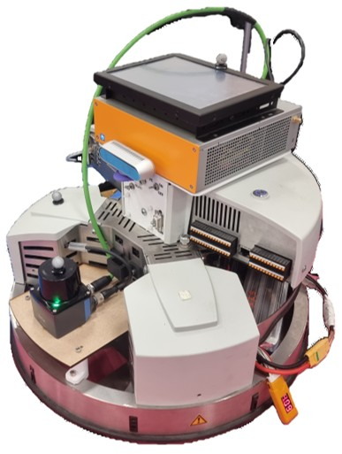

Robotino Startup Guide
{kind=link}

GNU Grub Interface
This PC has both 22.04 and the older 16.04 installed together. On startup, you will
only see the option to boot into 16.04 labelled Ubuntu 16.04 on sda1. To boot
into 22.04, just pick the first option labelled simply as Ubuntu on the startup menu.
Note
By default the user is set as robotino. Uninspiringly, the password is also robotino.
bash_rc (Ctrl+H to view in home directory)
I added a few convenience functions in the secret bash folder that will help with
initially sourcing ROS and running ROS related operations. bashrc is where the
terminal is configured and if you would like to add your own commands, feel free to.
It will not modify the system directly and if you did something that broke the terminal,
just revert the changes.
Note
Given you accidentally lost the file or want to recover it to its original state, a copy is saved in https://github.com/yeezhen-robotics/Robotino-ROS_WS-Remote/tree/main/config
Below is a summary of every custom convenience function added to bashrc:
Function Name |
Software Req. |
Usage Description |
Example |
|---|---|---|---|
|
System |
Runs |
|
|
Tmux |
Attaches to an existing tmux session by name. |
|
|
Tmux |
Lists all currently active tmux sessions. |
|
|
Tmux |
Creates a new tmux session with a given name. |
|
|
Tmux / ROS |
Navigates to the talker-publisher example directory and runs its tmux launch script. |
|
|
ROS |
Plays back the pre-recorded ROS2 bag file for the oval simulation. |
|
|
ROS |
Plays back the pre-recorded ROS2 bag file for the track drive simulation. |
|
|
ROS |
Sources the ROS2 workspace and records all active topics into a named bag file. |
|
|
Tmux |
Lists all available tmux launch file directories in the workspace. |
|
|
ROS |
Lists all saved ROS2 bag files in the rosbags directory. |
|
|
Tmux / ROS |
Navigates into a named tmux launch file directory and runs its launch script. |
|
|
ROS |
Sources the ROS2 workspace |
|
ROS1 (Noetic)
For Ubuntu 22.04, ROS1 is no longer supported, therefore you would need to build from source. The method below is recommended but a different method can be used too.
Repository: ROS1 22.04 Docker Image
Setup Guide: Medium article by Lukas
Sourcing ROS1 (Noetic):
source ~/ros_catkin_ws/install_isolated/setup.bash
ROS2 (Humble)
For the official installation guide, refer to the ROS2 Humble installation documentation.
Sourcing ROS2 (Jammy):
source /opt/ros/humble/setup.bash